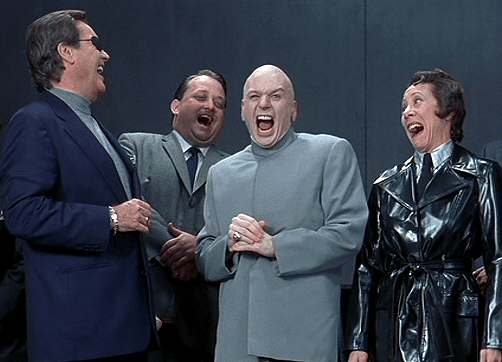

Michael is the author of Staying Married in a Degenerate Age. Follow him on Twitter or Facebook. You can read more of his writing at Honor and Daring.


As we approach the end of year, the media typically gives us a rehash of what happened over the past year. While that can be a fun exercise, at ROK we like to be different. Instead of a look back, here is a look forward as to what we can expect in the New Year.

As we go into the end of the year, Donald Trump is dominating the race for the Republican presidential nomination. He leads the field with 39% of the likely Republican and Republican leaning voters.
Trump has a double-digit lead over his nearest competitor, Ted Cruz, who polls at 18%. Mark Zuckerberg’s Senator and GOP establishment darling Marco Rubio only rates 10%.
Prediction: Assuming that Trump doesn’t make a major mistake, he will become the Republican nominee for president. And he will easily defeat the corrupt, unlikable, and low-energy Clinton to become the 45th President of the United States. Contrary to the prevailing opinion, Trump will draw unprecedented numbers of black and Hispanic voters to his side.
That is unless the Establishment pulls something to prevent the democratic process from working.

It is no secret that that Trump ruffles the feathers of America’s ruling oligarchs. As Roosh pointed out in this insightful essay, we are ruled by a powerful elite. While voters do have some clout with their elected representatives, it comes second to the interests of the big money donors who keep the politicians in office.
Trump upsets this dynamic. He is self-funded so the oligarchs are not able to buy him. Trump also opposes illegal and uncontrolled illegal immigration. This strikes at the cheap labor that many of the donors rely on.
For this reason, the Establishment has been trying to figure out a way to railroad Trump without appearing that they are being undemocratic. For example, the Virginia Republican Party recently implemented a rule that would require voters to sign a loyalty pledge to vote in the primary. This is intended to undermine support for Trump who polls well with voters, such as blacks, who do not traditionally vote GOP.
Meanwhile, GOP political analyst William Kristol suggested that if Trump wins the Republican nomination, it would be necessary to start a new party. Of course, a third party candidate from the conservative side would mean that Hillary Clinton would win by default—but that just demonstrates that the Establishment prefers a candidate who will color within well-defined lines, even if that candidate is a progressive.
Prediction: If the Establishment does something to derail Trump, and does it in an obviously unfair way, there will be civil unrest as it dawns upon Americans that they do not really control their own government.
Black Lives Matter is a movement that started as a Twitter hash tag in 2012 after the shooting of Trayvon Martin. However, the movement really exploded onto the national scene as a driver for the Ferguson protests in 2014.
Black Lives Matter (BLM) is ostensibly about calling for police to treat blacks more fairly. In reality, it is an enormously polarizing movement. It seeks to agitate rather than to find real solutions to the black crime and police violence.
The “black brunch” protests from earlier this year were a good example of BLM’s desire to incite anger. Protestors targeted restaurants that had a largely white clientele to enter while people were eating brunch to read off the names of black people who had been killed by police. Imagine if you were eating brunch with your small children—would you feel threatened if a large group of angry people stormed in and started chanting about unjust deaths?
If BLM really was concerned about black lives, one would expect that they would also protest black on black violence, which accounts for significantly more deaths of blacks than does police brutality. But they are silent on this point.
So if it is not really about black lives, what is the reason for BLM? The biggest reason is polarizing blacks and whites. This has several benefits. First, Hillary Clinton needs the black vote to capture the White House in 2016, but it is doubtful that she could generate the same kind of ardor as that Obama did in 2007. By making blacks feel like they are under attack, they are more likely to get out and vote for Hillary.
A second reason is that if blacks and whites are battling each other it keeps them from noticing that their political representatives are not particularly responsive. At the national level, globalist concerns seem to always take priority over the good of the nation.
Prediction: The agitation produced by BLM (and by extension George Soros) will result in unnecessary loss of life in 2016. Blacks and whites who are incited by the movement will lash out at innocent victims.
To minimize the damage from this movement we should remember that this is a deliberate attempt by the people who are funding BLM to keep us distracted by fighting each other. Don’t fall for the deception. Instead, focus on the puppet masters.
Apart from a few countries like Poland and Hungary, Europe shows no signs of reversing its suicidal policy of taking in hordes of Islamic immigrants.
Prediction: Europe will have to experience several more Paris-like attacks before its inhabitants realize that candlelight vigils will not stop Muslims from having a desire to conquer the continent.

Feminist philosophy is now deeply ingrained in every aspect of our culture. All women seem to be infected with it to a greater or lesser degree.
That said, I’ve spoken to several young women who will identify as feminists even though their views are quite traditional. The new development is that some women are now openly rejecting feminism and embracing patriarchy. They are still a minority, but they are vocal. They will gradually influence their peers.
Prediction: Feminism has reached its maximum expansion. 2016 marks the year when it will begin to lose ground, but it will be a slow battle at least in the early stages.
When we look back, 2016 will represent a turning point in the culture war. It will be the year when progressive forces are halted and traditional values begin to return. It will not be easy and it may even become unpleasant in some places. One thing is certain though, 2016 will not be boring.
Happy New Year to the entire ROK community!